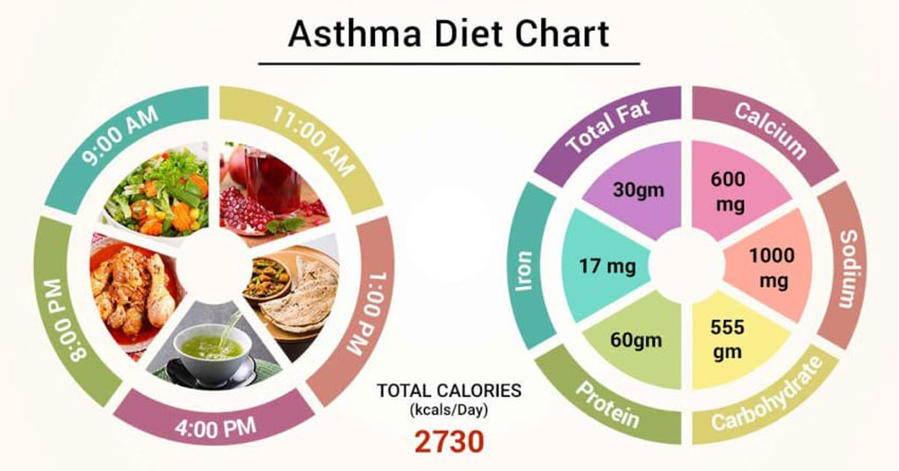
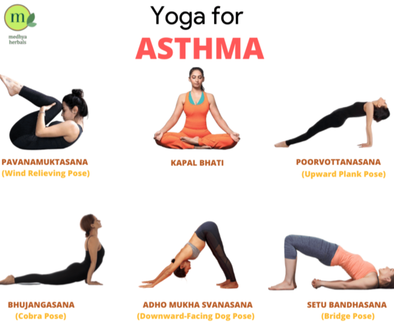

PRECAUTIONS

Avoid Triggers

Use Inhaler Correctly

Monitor Symptoms
Key points about monitoring asthma symptoms:
Key points about monitoring asthma symptoms:


Improve breathing and relaxation with yoga. Bridge pose, Baby cobra pose, Supine spinal twist, Cat-cow pose, Low lunge pose